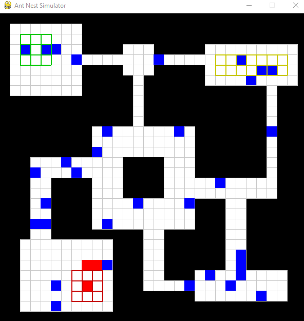
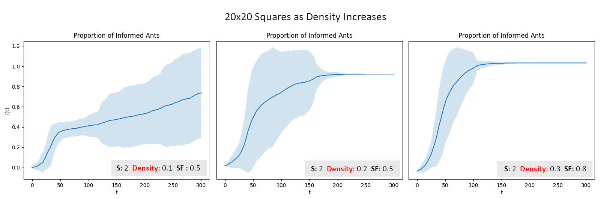
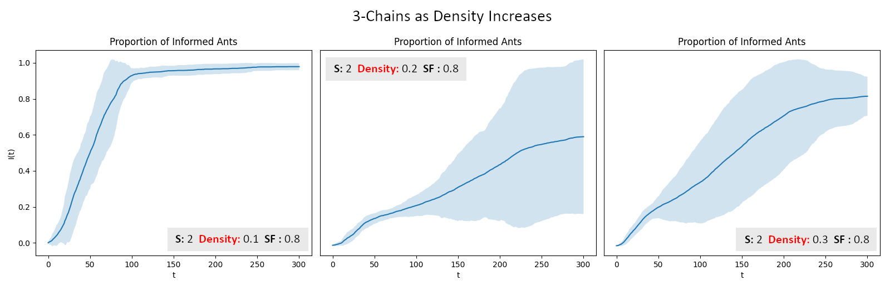

This summer, I attended the QRLSSP REU at Arizona State University online. We spent the first few weeks learning various mathematical tools for modeling topics in the life Sciences such as pandemic simulations, population growth, immunology, etc. Many of these are well worth spending a whole article on so look forward to those in the coming months! After This curriculum, we spent another four weeks in smaller groups working on projects we came up with. My group of two undergrads, one graduate student mentor, and one faculty mentor decided to focus on social insects.
I had seen a few interesting videos on ants by Kurzgesagt (a wonderful informative channel on YouTube) and thought they would be fun to learn more about. On forming our group, we had no idea what sorts of problems there were to study about ants, so we spent a week reading dozens of articles from the past few decades on social insects and how they pass information between one another.
We learned that there are three main ways social insects pass information; antennation, trophallaxis, and pheromonally. They are each used to pass different types of information with antennation being used for general purpose communication, tropallaxis for direct transfer of food, and pheromones for nest construction and paths from and between nests.
On the left is an example of antennation and on the right, trophallaxis
Previous work had been done studying how ants pass information around by making models with simple boundaries and comparing them to experimental data. We can often tell when an ant has recieved a message when their speed increases and movement becomes more erratic. This is called the ants alarm response. What our group was interested in was how information flows through a colony when interactions are occuring within more complex nest structures. Interconnected tunnels and chambers of various sizes are expected to have some effect on the efficiency of this process so we wanted to understand via simulation what the potential benefits of various nest structures might be.
The way we did this was by adapting a model from an earlier work by Yun Kang, who we met with several times to get recommendations on what changes could be made.
Our Model
We went with a discrete-time agent-based model in which ants have a number of attributes including location, task, walking style, and information status. The nest is represented by some connected subset . The location of ant at time is a unique , the task is an natural number less than (the number of task zones such as food processing area, brood care, etc.), walking style is either drifted () or random (), and information status is a boolean value. The task zones are subsets of which represent areas of isolation seen in real ant colonies. Our model assumes that ants will tend to segregate themselves into their task zones and that ants which have drifted walking style will do this by walking directly towards their task zone when separated from it.
Initializing the simulation, ants randomly populate the nest structure stored as a matrix and are updated according to the following update step:
Each time step, this update step is run for all ants in a random order
Below is an example of a simulation over a couple hundred time steps. The red tiles represent ants which have recieved an alarm signal and the blue represents unalarmed ants. When ants interact, there is a chance that information transfers between the two which we track as a successful contact. The primary differences between this simulation and a simulation based on the previous work by Dr. Kang is that the nest structure isn't square. By allowing for other types of connecting domains like this one, we can really begin to explore more realistic nest shapes and how they might affect interactions.

Notice that some ants (those with drifted walking style) will navigate around corners to find their task zone
Something we needed to drastically change after allowing this wider range of possibilities for was the walking style for the ants. Previously, ants would move to the open square nearest to the center of their respective task zone. This causes problems in these more complex nests when the nearest tile to the task zone is in a wall. The ant would repeatedly run into the wall never reaching its goal (quite an unrealistic behaviour). To fix this, we assume that over short timescales and in small nests, the ants are aware of a path which will bring them to their task zone. With this assumption, we can allow ants to follow an optimal path found using A* search until they run into another ant. Once this happens, they move out of the way and recalculate their path.
Our Metrics
In our readings of previous papers, we found a number of ways to analyze interactions networks. These included Spatial Heterogeneity Degree (essentially the amount of variance in ant location over time), total informed population over time, contact rates between and within task groups, and the number of motifs seen in the time-aggregated network. We decided to track each of these while varying density of ants in the nest, spatial fidelity (proportion of ants which have directed walking style), and the shape of the nest itself in order to cast a wide net searching for interesting results.
Our Results
To capture a variety of nest structures without simulating entire nests, we decided to simulate on basic nest components such as chambers, loops, tunnels, and chains. What we determined is that each of these components had different optimal conditions for information flow (where 'optimal' means a low time to a fully informed colony). In some cases, these conditions were the complete opposite from other components.

Efficiency of information flow increases as density increases for squares

Efficiency of information flow decreases as density increases for chains
In the examples above, we see that the density of ants seems to positively effect information flow in square shaped nests but negatively effect information flow in chains (squares connected by narrow tunnels). This makes sense because in squares, an increased density means more interactions per second which leads to a fully informed population faster. In chains however, a high density makes it difficult for ants to navigate quickly through the tunnels between chambers. This slows travel drastically and increases the time it takes to inform all of the ants.
Why would ants want this? Wouldn't it be great if all nest structures were refined to inform the population of threats and food sources as quickly as possible?
We thought about this for a while and realized that it may have to do with ant diseases. Ants can get poisoned by foods they retrieve or get sick by other means and because of the ways in which they communicate (specifically trophallaxis), contact between ants can make it highly likely to transfer these illnesses. In a nest where information flow is highly optimized, so is the spread of pathogens. Perhaps structures are in place to balance out these two things. Of course, investigation of real ant colonies is necessary to confirm or deny this, but our model provides some insight into what we might expect to see.
There are a few other results we talk about in our actual tech report so I encourage you to look over that in the resources if you're interested! Thanks for reading!
Resources
- Article on Original Model
- Final Tech Report
- Final Presentation
- SACNAS Conference Poster
- Phragmosis (one of my favorite features in certain ant species)